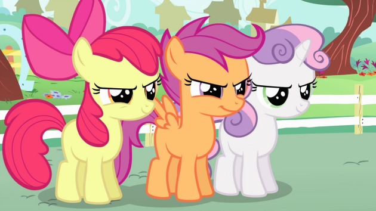
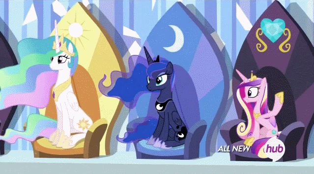

Bijpersonen
Cutie Mark clubleden

De Cutie Mark club bestaat uit Apple Bloom, Scootaloo, Sweetie Belle. De drie veulens zijn opzoek naar
hun cutie mark. Een cutie mark krijgt een pony als ze hun speciale talent vinden, daarom doen de
clubleden zoveel mogelijk dingen om hun speciale talent te vinden.
Koninklijke familie

Het koninklijke familie bestaat uit Prinses Celestia, Prinses Luna en Prinses Candace. De koninklijke familie zijn de enige eenhoorns met vleugels.
In de serie zie je Celestia aan het einde van bijna alle afleveringen. Je ziet haar een brief lezen van Twillight, die vertelt wat ze in die aflevering heeft geleerd over vriendschap.